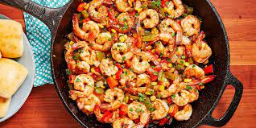

Cajun Shrimp

Cajun shrimp dinner to impress your peers with
This shrimp recipe is loaded with veggies and Cajun spice. We went with bell peppers, onions, and corn, but any stir-fry vegetable would work here.
Cooking in batches may seem annoying, but prawns cook quickly! You only need about 2 to 3 minutes per side for it to turn pink.
BOTTOM LINE: It's not that hard, and it's worth it.
Ingredients
- 2 tbsp. extra-virgin olive oil
- 1/2 onion, chopped
- cloves garlic, crushed
- 2 bell peppers, chopped
- 115 g sweetcorn (frozen and defrosted or canned)
- 680 g prawns, peeled and deveined
- 2 tsp. Cajun seasoning
- Freshly ground black pepper
- 1 tbsp. lemon juice
- 1 tbsp. freshly chopped parsley
Steps
- In a large skillet, heat 1 tablespoon olive oil over medium heat. Add onion and bell peppers and sauté until tender, about 5 minutes. Stir in garlic and corn and cook for 1 minute more. Transfer vegetables to a bowl.
- Add remaining 1 tablespoon oil to pan. Add prawns in a single layer and season with salt, pepper and Cajun seasoning. Cook until pink, about 1 to 2 minutes per side.
- Add vegetables and lemon juice and toss until combined. Garnish with parsley before serving.
Back to main page